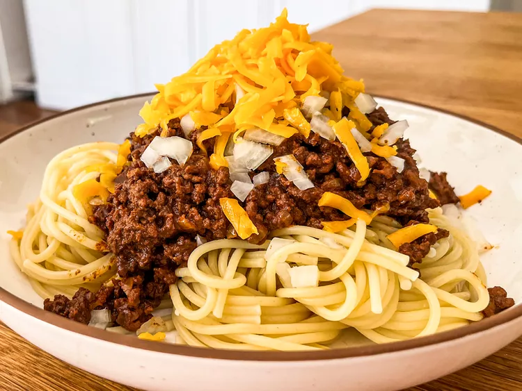

Authentic Cincinnati Chili

What is Authentic Cincinnati Chili?
Cincinnati chili (or Cincinnati-style chili) is a meat sauce with Mediterranean-inspired flavors that’s traditionally used to top spaghetti or hot dogs.
It’s similar to chili con carne, but it’s different in flavor and texture. It’s also used primarily as a topping, while chili con carne is usually served in a bowl.
- Beef: This Cincinnati chili recipe starts with two pounds of lean ground beef.
- Water: Boil the meat in about a quart of water.
- Onion and garlic: Finely chopped onions and garlic lend bold flavor.
- Tomato sauce: Canned tomato sauce is the perfect rich base.
- Vinegar: Two tablespoons of vinegar bring welcome brightness.
- Worcestershire sauce: Worcestershire sauce takes the flavor up a notch.
- Chocolate: Unsweetened chocolate is the secret ingredient that adds rich flavor.
- Seasonings: Season the Cincinnati chili with chili powder, salt, cumin, cinnamon, cayenne pepper, whole cloves, whole allspice berries, and a bay leaf.